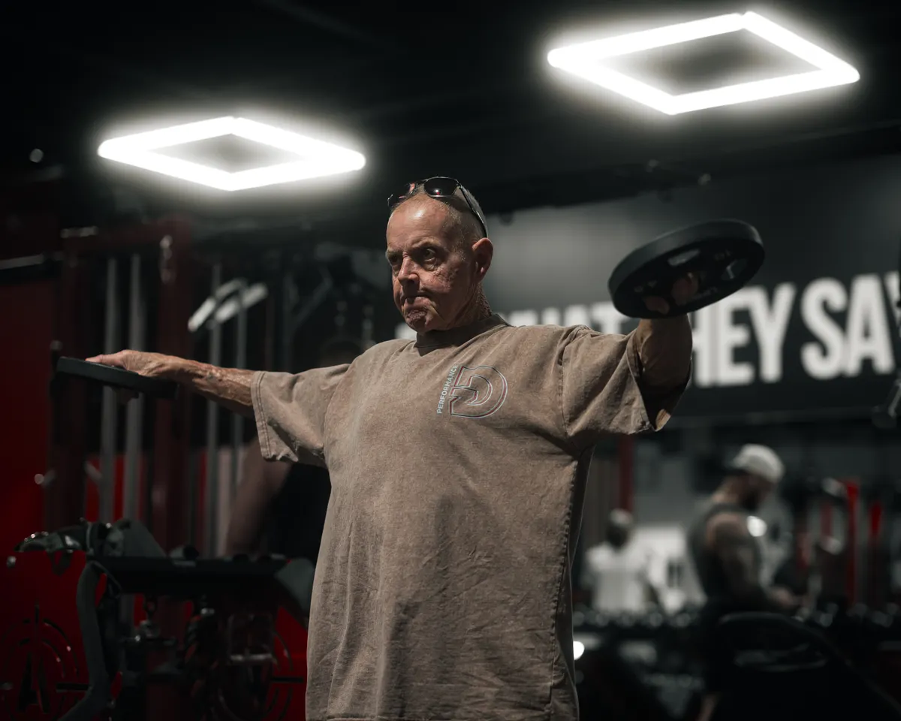

About ten minutes
You lie on your back on an open table, fully clothed. A scanning arm passes above you. That is the whole thing.

DXA The gold standard for measuring bone density
Most people find out their bones are weak the day one breaks. A ten-minute scan tells you years earlier, while there is still plenty you can do about it.
No needles. No tunnel. You stay in your own clothes.
You lie on your back on an open table, fully clothed. A scanning arm passes above you. That is the whole thing.
Bone strength, muscle, fat — measured, not estimated. Explained to you in words you already use.
The practice is nurse-led. The same person walks you through the result and what to do next.
Said plainly
The technology behind this practice has a mouthful of a name. What it does for you is simple, so that is how we have written it. Every term on this site comes with a plain translation attached.
Dual-energy X-ray absorptiometry (DXA)
A ten-minute scan you lie down for, fully clothed. It measures how strong your bones are and how much muscle and fat you carry — and where.
Osteoporosis
Bones that have thinned enough to break easily. It usually causes no symptoms at all until something breaks — which is exactly why it gets measured rather than felt.

Three ways in
The practice runs three programmes. Which one you need depends entirely on what the scan finds — so almost everybody starts in the same place.
Find out what you are actually working with, then build on it.
The scan gives you a starting number for bone strength and muscle mass. From there you get a plan aimed at raising both, with the next scan as the scoreboard.
What this involvesCatch the decline while it is still a number, not a fracture.
Bone and muscle loss are quiet. This is the posture, balance and mobility side of the practice — the work that keeps a stumble from becoming a broken hip.
What this involves
InsureReclaimLost ground is not always permanent ground.
A personal prescription with monthly targets, built around goals you set — carrying your own shopping, getting off the floor, walking the dog without a second thought.
What this involves
Why this matters
A broken hip or wrist late in life is rarely just a broken bone. It is months of not driving, not cooking, not living alone. The practice exists to keep that day from arriving.
Strong bones and strong muscle are the two things standing between a stumble and a fracture. Both can be measured. Both can be improved. Neither improves on its own.
Your first visit
Nobody books a thing they cannot picture. So here is the whole visit, in order.
Your history, your medication, what your parents' bones did, what you actually want to still be doing in ten years.
Ten minutes on an open table, fully clothed, nothing touching you. You can talk the whole way through it.
Your numbers on a screen, in plain words, with the bits that matter pointed at. Questions are the point.
Written down, specific, and yours — plus a date to come back and see whether it worked.
Everything on offer
The same scan that measures bone measures muscle and fat too. Around it sits the hands-on work that turns a number into a change.
How strong your bones are, as a number you can track.
What you are made of, rather than just what you weigh.
Ongoing, nurse-led care if your bones have already thinned.
Balance, posture and flexibility, tested rather than guessed.
Neck, shoulder, back, hip and knee — getting range back.
Breathing with your diaphragm instead of your neck and shoulders.
The aches that come from doing one movement too often.
Someone in your corner between appointments.
Who comes in

You want to know where you stand before something forces the question.
Especially worth doing after menopause, after a fracture, if osteoporosis runs in your family, or if you have simply noticed you are not as steady as you were.

Screening, diagnosis and ongoing osteoporosis management in one place.
The practice works alongside doctors and medical facilities, and your patient comes back to you with a result they can actually explain.
Real body composition beats a bathroom scale and a guess.
Sports and fitness facilities use the same scan to sharpen training, feed nutrition decisions and spot the imbalances that turn into injuries.
From the practice
The practice writes about bone and muscle health regularly. These are its own articles, with a plain-English line on what each one is actually about.
3 June 2026
What the common bone medicines do, why they are prescribed, and the questions worth asking before you start one.
11 May 2026
If a parent broke a hip, your own risk is higher than you think. What to do with that information.
1 April 2026
Stiff ankles quietly change how you walk, stand and catch yourself. The knock-on effects reach a long way up.

A confident movement for life
Do not outlive your health. Find out where your bones and muscle actually stand, and get a plan for the next ten years while those years are still yours to shape.
7 Malibongwe Drive, EmedCentre, Randburg
Monday to Friday, 08:00 – 17:00
Phuture Digital · Concept work
Each of these is a complete site we designed and built to show what the finished thing looks like before anyone commits. Have a look at the others.
 Khanya Dental Studio
Dental practice
View concept →
Khanya Dental Studio
Dental practice
View concept →
 Hamba Freight
Last-mile logistics
View concept →
Hamba Freight
Last-mile logistics
View concept →
 UMSUKA Collection
Boutique hospitality
View concept →
UMSUKA Collection
Boutique hospitality
View concept →
 THATHA
Micro-retail units
View concept →
THATHA
Micro-retail units
View concept →
 Africrest
Built-to-rent property
View concept →
Africrest
Built-to-rent property
View concept →
Concept redesign. InsureSPR Health is a real practice. This is Phuture Digital’s own take on their site, built to demonstrate design and build work. It is not their official site, is not affiliated with them, and nothing here is medical advice.